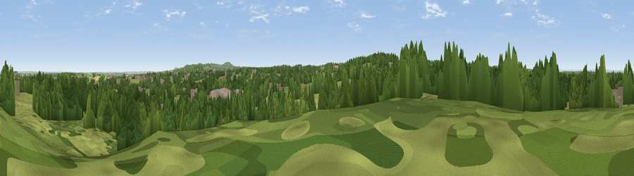

Viewpoint near Newbold
#33945 in England · top 71% of its area beats it · near NewboldThe view, rendered

A 360° render of this exact spot computed from the terrain model, tree cover and land cover — summer colours, afternoon light, calibrated against photographs of famous viewpoints. Real trees, hedges and buildings will differ in detail.
The panorama
Grey silhouette: terrain skyline in each direction (720 bearings, Earth curvature and refraction included). Dashed green: skyline with trees (+15 m) and buildings (+8 m) as obstacles. Blue strip: how far the ground is visible on each bearing.
Where the view opens
Wedge length = distance to the farthest visible ground on that bearing (vegetation-aware). Rings at 10, 25 and 50 km.
What fills the view
51% woodland · 38% grassland · 7% cropland · 4% built-up
Angular shares of the visible panorama (visual magnitude), not map area. Landscape diversity 0.45 (0–1 Shannon).
Key numbers
More beautiful places nearby
The staircase of upgrades: each row has a higher view potential than everything closer. Driving times are estimates from straight-line distance, calibrated against real road routing — check an actual route before setting out.
| Place | Direction | Drive | Score |
|---|---|---|---|
| Viewpoint near Worthington | NNE · 3 km | ~8 min | 40.0 |
| Viewpoint near Smisby | WNW · 4 km | ~9 min | 54.9 |
| Viewpoint near Whitwick | ESE · 5 km | ~10 min | 63.6 |
| Viewpoint near Whitwick | ESE · 5 km | ~11 min | 71.2 |
| Ives Head | E · 8 km | ~16 min | 73.3 |
| Viewpoint near Stanton under Bardon | SE · 8 km | ~16 min | 76.0 |
| Viewpoint near Woodhouse Eaves | ESE · 12 km | ~22 min | 77.7 |
| Viewpoint near Mow Cop | NW · 66 km | ~89 min | 80.2 |
52.76242, -1.41200 · source: screening · position refined by local search. Computed location — check access rights before visiting.